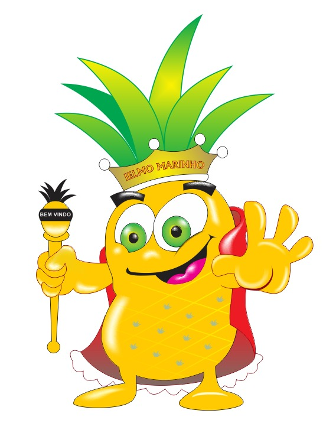

| 
|
VI Feira Brasileira do Abacaxi acontece em Ielmo MarinhoPrefeitura de Ielmo Marinho realiza, no período de 8 a 10 de setembro, no distrito de Umari, a sexta edição da Feira Brasileira do Abacaxi. A abertura oficial do evento aconteceu, nesta quinta, dia 8. A programação técnica da Feira, cujo tema é “Abacaxi: concretizando realidades”, contará com oficinas para os produtores de abacaxi e shows artísticos que animarão o público estimado em 10 mil pessoas por noite. Mais do que um evento, a Feira Brasileira do Abacaxi é uma grande reunião do setor econômico que se evolui e se consolida como vetor de desenvolvimento de Ielmo Marinho, município distante 54 quilômetros de Natal. Se integram e participam da Feira, agricultores, pesquisadores, distribuidores, comerciantes e demais agentes ligados à atividade. “O tema da feira deste ano não poderia ser outro. O cultivo do abacaxi é uma das atividades que mais impulsiona a economia da nossa cidade”, diz o prefeito Germano Patriota.
Programação cultural: |